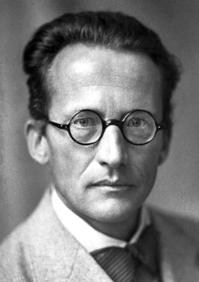
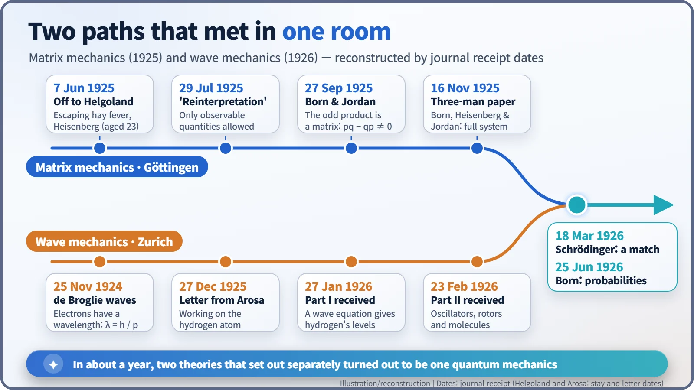
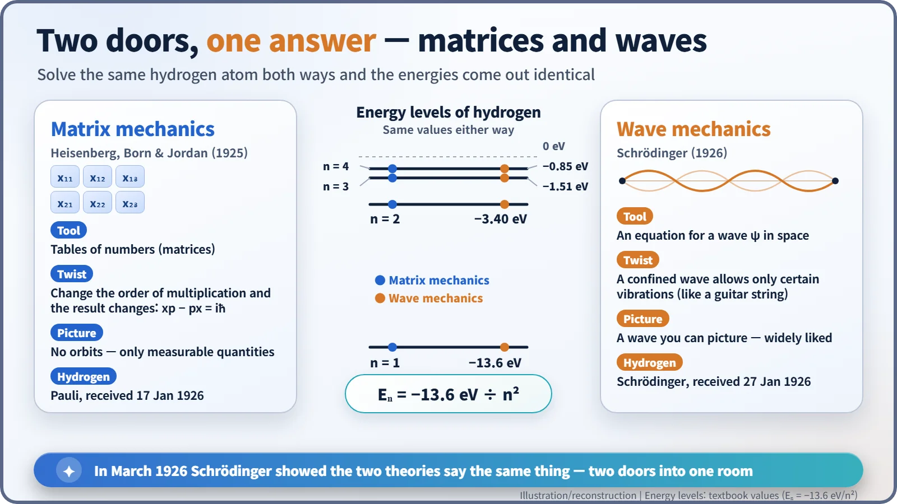

Nuclear History · 037
"Repulsive" and "Rubbish" — How Heisenberg and Schrödinger Built Quantum Mechanics Twice (1925–1926)
One theory was made of tables of numbers, the other of waves; their creators disliked each other's maths, yet in 1926 they proved to be two doors into the same room.
In 1925 Werner Heisenberg, Max Born and Pascual Jordan built quantum mechanics out of tables of numbers called matrices. A few months later Erwin Schrödinger built it again out of waves. The two camps disliked each other's mathematics, yet in March 1926 Schrödinger showed that the two theories say the same thing: two doors into one room.
Two rivals trading insults
"The more I think about the physical portion of Schrödinger's theory, the more repulsive I find it. What Schrödinger writes about the visualisability of his theory … I think is rubbish."
That is Werner Heisenberg (1901–1976), aged 24, writing to his friend Wolfgang Pauli on 8 June 1926 (our translation of the German "abscheulicher" and "Mist"). His target was the new theory of Erwin Schrödinger (1887–1961). Schrödinger had not been exactly gracious either. Three months earlier, in print, he admitted that Heisenberg's methods had left him "deterred, if not to say repelled" (our translation of "abgeschreckt, um nicht zu sagen abgestossen"). The twist is that the two theories they were sniping at each other about were, at heart, the same theory. [3] [4]
Bohr's atom hits a wall
In the early 1920s the standard picture of the atom was Niels Bohr's model: electrons circle the nucleus only on certain allowed orbits. It explained the spectrum of hydrogen beautifully, but with helium, which has just two electrons, the sums stopped working. Groups in Göttingen (around Max Born, 1882–1970), Copenhagen (Bohr) and Munich (Arnold Sommerfeld) competed and cooperated in the hunt for better rules.
Escaping the pollen
On 7 June 1925 Heisenberg, a 23-year-old lecturer at Göttingen, fled weeks of miserable hay fever for Helgoland, a small, almost pollen-free island in the North Sea. There he decided to throw out electron orbits, which no one could ever observe, and build a theory only from things that are actually measured: the frequencies and brightness of spectral lines. In his memoir, published in 1969, he recalled: "It was about three o'clock at night when the final result of the calculation lay before me." Written more than 40 years later, the details deserve some caution, but the island is where the breakthrough began. [5]

The result, his "reinterpretation" paper, reached the journal on 29 July 1925. Born read it and recognised that the strange multiplication rule Heisenberg had invented was something mathematicians already knew: multiplying matrices, tables of numbers arranged in rows and columns. With matrices, the order matters: A times B need not equal B times A. In a paper received on 27 September, Born and his 22-year-old assistant Pascual Jordan (1902–1980) found the key rule: swap the order in which position and momentum are multiplied, and the difference is a fixed amount, written today as iħ. That tiny-looking difference turned out to be the seed of much of the quantum world's strangeness; it means position and momentum cannot both be pinned down at once, a point Heisenberg would make famous in 1927.
On 16 November the "three-man paper" by Born, Heisenberg and Jordan turned all this into a full system. That was matrix mechanics. In January 1926 Pauli used it to calculate the spectrum of hydrogen. [3] [5]
Waves instead of skiing
Meanwhile in Zurich, Schrödinger started from a completely different idea: Louis de Broglie's matter waves, the notion that electrons behave like waves too. When Schrödinger presented de Broglie's work at a seminar in November 1925, his colleague Peter Debye remarked that if you talk about waves, you need a wave equation, or so Felix Bloch, then a student, recalled many years later. [4]

Schrödinger spent the Christmas holidays of 1925 in the Swiss Alpine resort of Arosa. On 27 December he wrote that he was struggling with the hydrogen atom, sighing (our translation): "If only I knew more mathematics." On 27 January 1926 the first part of "Quantisation as an Eigenvalue Problem" arrived at the journal. Think of a guitar string: fixed at both ends, it can only ring at certain notes. An electron's wave, held by the nucleus, likewise allows only certain patterns of vibration, and those patterns correspond to the atom's energy levels. Out of his equation came the energies of hydrogen. [2] [4]

Same room after all
The two theories could hardly have looked more different: one was all tables of numbers and multiplication rules, the other an equation for a wave spread through space. Many physicists welcomed Schrödinger's waves because they could picture them. Then, in a paper received on 18 March 1926, Schrödinger himself showed that the two theories correspond to each other. Pauli reached the same conclusion in a letter. A fully rigorous mathematical treatment took a few more years, but the essential point was clear: solve the same atom both ways and you get the same answers. [3]

So what is the wave? Schrödinger hoped it was a real, smeared-out electron. Born, in a paper received on 25 June 1926, gave a different answer: the strength of the wave (the square of its amplitude) gives the probability of finding the electron there. Reading the atomic world in terms of probability set the stage for the uncertainty principle and the great debates of the following year. [3]
The common language of nuclear physics
Heisenberg received the 1932 Nobel Prize in Physics, awarded in 1933, "for the creation of quantum mechanics". Schrödinger shared the 1933 prize with Paul Dirac "for the discovery of new productive forms of atomic theory". Born's probability interpretation was recognised only in 1954, and Jordan never received a Nobel Prize. [6]
The new theory soon turned to the nucleus. In 1928 wave mechanics explained alpha decay through "tunnelling". Today the nuclear data used to design reactors, such as the probabilities of neutron reactions (cross-sections), and calculations of nuclear structure all rest on the foundations laid in 1925–1926. Having two doors turned out to be a gift: you can walk in through whichever one makes the calculation easier.